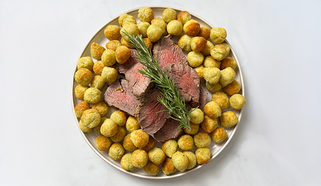

FILETE EN COSTRA DE PIMIENTAS CON PAPAS

Ingredientes
- 1 kg de filete de vacuno
- Mix de Pimientas Gourmet a gusto
- Sal de Mar Gourmet a gusto
- Queso parmesano a gusto
- Mostaza semi-fuerte a gusto>
- Aceite de oliva a gusto
- Papas duquesa para acompañar
Preparacion
- Añade un toque de aceite de oliva al filete y distribuye por toda la superficie.
- Pinta el filete con una capa fina de mostaza.
- Añade un toque de sal y una capa generosa de pimienta.
- Por último, cubre con queso parmesano recién rallado.
- Pon el filete en una fuente para horno.
- Hornea a 220º por 18-20 minutos o hasta lograr el punto deseado.
- Deja reposar 10 minutos antes de cortar.
- Sirve con papas duquesas o papas horneadas.
Volver a la pagina principal